Apprendre
Le petit lexique du tireur, pour que tout le monde se comprenne.
🔢 Les calibres
- 4,5 mm (.177)
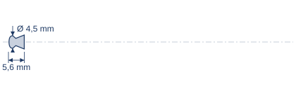
- Les plombs de l'air comprimé, pour le tir à 10 m.
- 22 LR
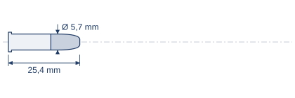
- Petite cartouche peu chère et sans recul, idéale pour débuter ; elle peut quand même porter jusqu'à 1 500 m.
- 9 mm (9×19)
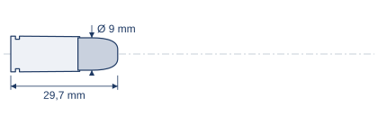
- Le pistolet le plus courant : 9 = diamètre de la balle et 19 = longueur de l'étui, en mm.
- .38 Special / .357 Magnum
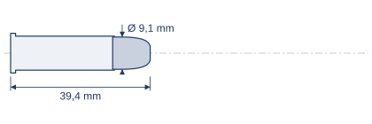
- Calibres de revolver ; un revolver en .357 peut aussi tirer du .38 Special.
- .45 ACP
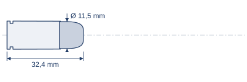
- Grosse balle de pistolet, plus lente, avec un recul plus marqué.
- .223 Rem / 5,56×45
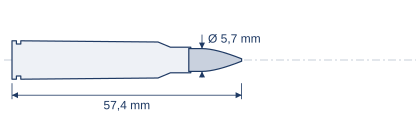
- Petite balle rapide pour carabine ; deux calibres très proches, pas tout à fait identiques.
- .308 Win / 7,62×51
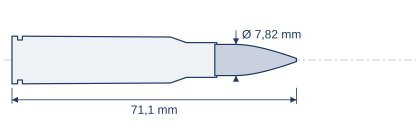
- Le classique du tir à 100 et 200 m : .308 = 0,308 pouce (7,82 mm) de diamètre de balle, et 7,62×51 = la même en mm (calibre × longueur de l'étui).
- Calibre 12
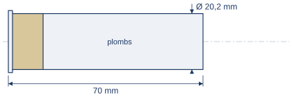
- Le calibre du fusil de ball-trap et de chasse ; ici le chiffre n'est pas un diamètre en mm.
🧨 Les munitions
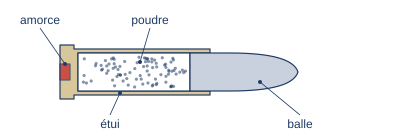
- Cartouche
- L'ensemble complet : balle + étui + poudre + amorce.
- Balle
- Le projectile, la seule partie qui part dans la cible.
- Étui
- Le tube en laiton qui tient tout ensemble ; il reste après le tir et peut être rechargé.
- Poudre
- Elle brûle très vite dans l'étui et ses gaz poussent la balle.
- Amorce
- La petite capsule au fond de l'étui : le percuteur la frappe et elle allume la poudre.
- Grain (gr)
- L'unité du poids de la balle (ex. 9 mm en 124 gr) : 1 grain = 0,065 g.
- Gramme (g)
- Souvent utilisé en Europe pour la charge de poudre (les manuels américains la donnent en grains).
💥 L'amorçage
- Percussion annulaire
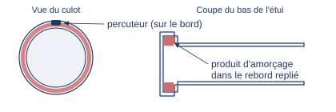
- Le produit d'amorçage est dans le rebord de l'étui et le percuteur frappe le bord (22 LR) ; l'étui ne se recharge pas.
- Percussion centrale
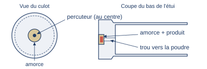
- Une amorce est placée au centre du culot et le percuteur la frappe au milieu : c'est le cas de presque toutes les autres cartouches, et l'étui se recharge.
🔭 Les lunettes
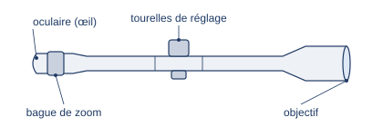
- Grossissement
- Ex. 3-12×50 : zoom de 3 à 12 fois, objectif de 50 mm de diamètre.
- Réticule
- La croix ou les repères que l'on voit dans la lunette.
- MOA
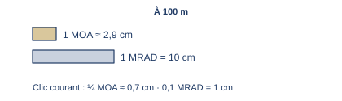
- Minute d'angle : 1 MOA ≈ 2,9 cm à 100 m.
- MRAD (mil)
- Milliradian : 1 MRAD = 10 cm à 100 m.
- Clic
- Un cran de tourelle : souvent ¼ MOA (≈ 0,7 cm) ou 0,1 MRAD (1 cm) à 100 m.
- Zéro
- Régler la lunette pour que le point visé soit le point touché à une distance choisie.
🔴 Les red dot
- Red dot
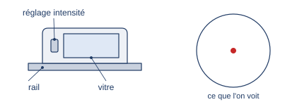
- Viseur sans grossissement qui montre un point lumineux, on vise les deux yeux ouverts.
- Taille du point
- Donnée en MOA : un point de 2 MOA couvre environ 6 cm à 100 m.
- Intensité
- Réglable : plus fort en plein soleil, plus faible à l'intérieur.
🎯 La visée
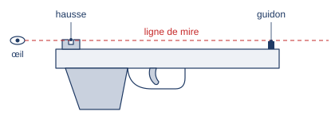
- Guidon
- Le repère à l'avant du canon.
- Hausse
- Le cran à l'arrière, souvent réglable en hauteur et sur le côté.
- Alignement
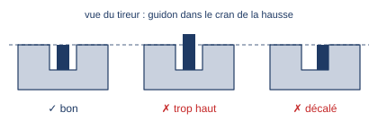
- Le guidon est centré dans le cran, et le haut du guidon arrive au niveau du haut de la hausse. L'œil fait le point sur le guidon, pas sur la cible.
- Ligne de mire
- La ligne œil → hausse → guidon → cible.
☝️ La détente
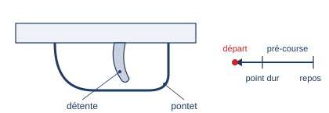
- Détente
- La pièce sur laquelle le doigt appuie pour faire partir le coup.
- Pontet
- L'arceau qui protège la détente.
- Pré-course
- La partie libre au début, avant le point dur.
- Poids de détente
- La force qu'il faut pour faire partir le coup, en grammes.
- Départ
- Le moment où le coup part. Il doit un peu surprendre le tireur.
Un mot manque ? Envoyez un petit mail.